初始化版本库
第一步：git的安装，到官网下载即可（https://git-scm.com/）Windows下傻瓜式安装，安装完毕会生成git shell客户端，这个客户端在Windows下是一个模拟Linux的窗口，支持大部分的Linux的命令操作：
第二部：创建一个目录，然后进入目录，将此文件夹下作为项目的root，然后执行：git init 初始化版本库：
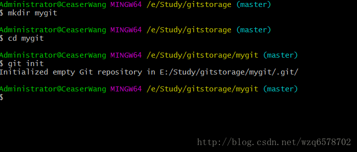
初始化之后在文件夹下的所有操作都会纳入到版本库的管理，此时需要说明一下git的三种状态：
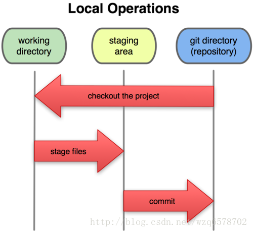
已修改：文件修改之后的状态
已暂存：文件add到暂存区的状态
已提交：文件提交到远程版本库的状态
git常用命令简要：
获得版本库
- git init
- git clone
版本管理
- git add 将文件存放道暂存区
- git commit 将暂存区文件提交到远程版本库
- git rm 删除文件，剥离版本库的管理
查看信息
- git help 帮助
- git log 查看提交日志
- git diff 比较文件的差别。可以是已修改的状态的文件和暂存区文件的差别，也可以是暂存区和远程版本库的文件的差别
远程协作
- git pull 把远程版本库的文件拉取到本地 - git push 将本地版本库的文件推送到远程git版本库的所有信息都在mygit的.git文件夹下边，如果我们删除此文件夹，那区别就是进入mygit这个目录的时候命令不会有诸如”(master)”这样的提示性的标示。
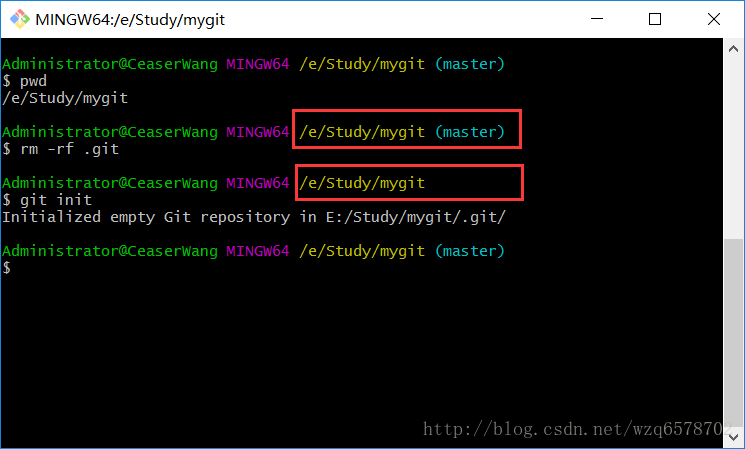
.git目录下边的文件保存了当前版本库的所有信息，一般不要手动修改，只能通过命令去修改：
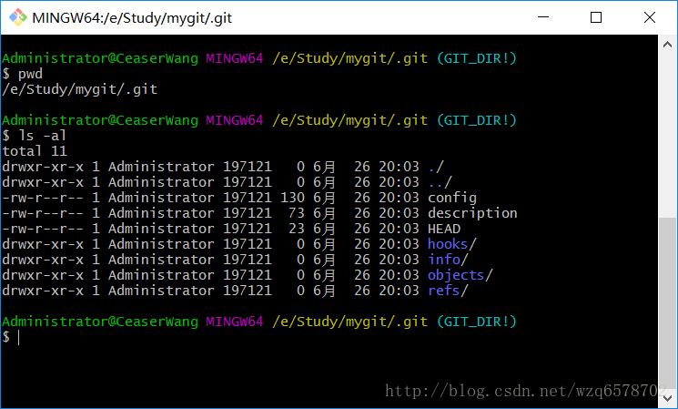
新建一个文件：
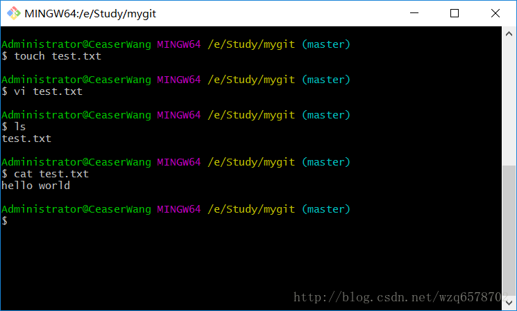
新建一个文件之后当前工作区发生来了变化，那么怎么查看当前工作区的状态呢？
查看工作区状态:
git status 命令
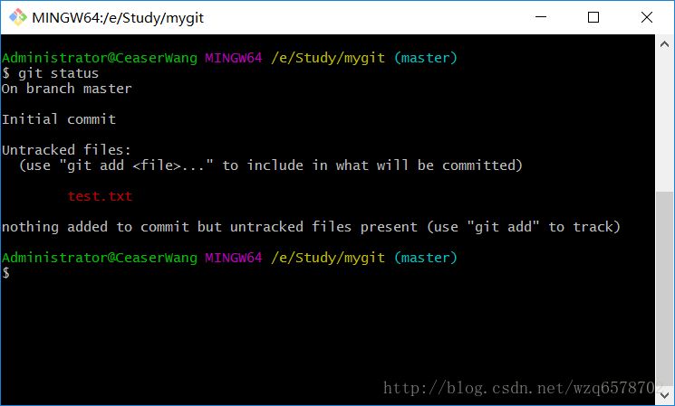
很明显文件的状态是未追踪的状态（untracked），文件处理修改状态。
将已修改的文件加入到暂存区：
git add test.txt 将文件添加到暂存区当中。
add完毕之后再去查看版本库状态：
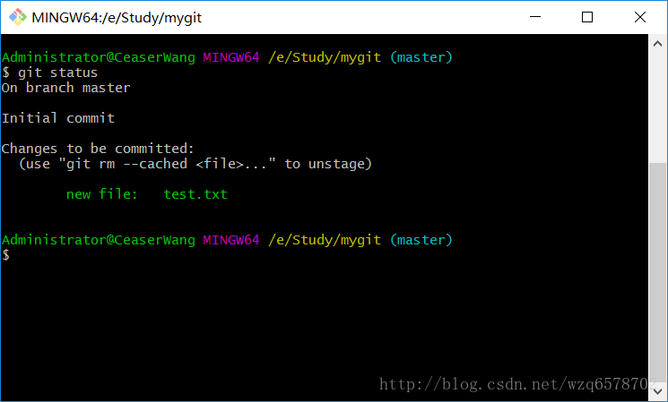
可以看到红色提示 new file : test.txt 意思是对于暂存区是一个新的文件，等待提交。
除了提示这是个新的文件之外，还有一句：use “git rm –cached
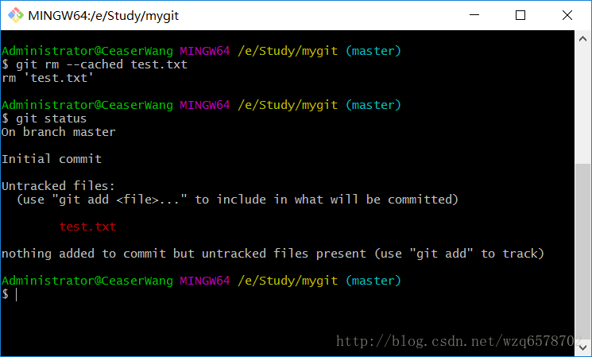
取消之后再去git status 就会回到文件刚刚创建的时候一样的状态。同样的道理我们再次git add test.txt 进去到暂存区恢复刚才的状态，接着我们下边的内容。
文件的提交（commit）:
文件添加到暂存区之后接下来我们对文件进行提交到远程版本库:
git commit
当我们输入完命令回车之后会出现一个编辑器：
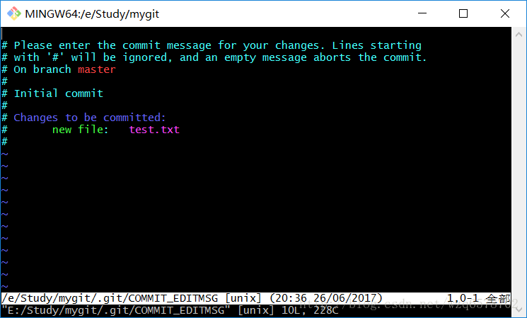
其中注释说明的意思是：当前提交需要添加提交说明，如果输入空内容忽略本次提交。我们什么也没有输入然后保存退出,出现：
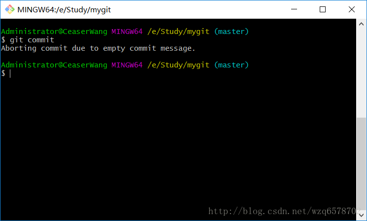
Aborting commit due to empty commit message. 意思是由于本次提交没有添加说明，当前提交被取消终止，这一点和svn有很大的不同，svn可以不添加提交说明也可以提交成功，而git是不允许的。
我们添加提交说明，然后保存退出：
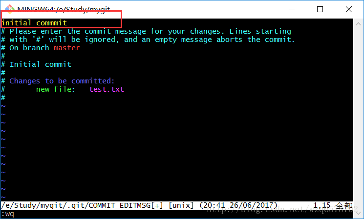
此时出现提交成功的提示：
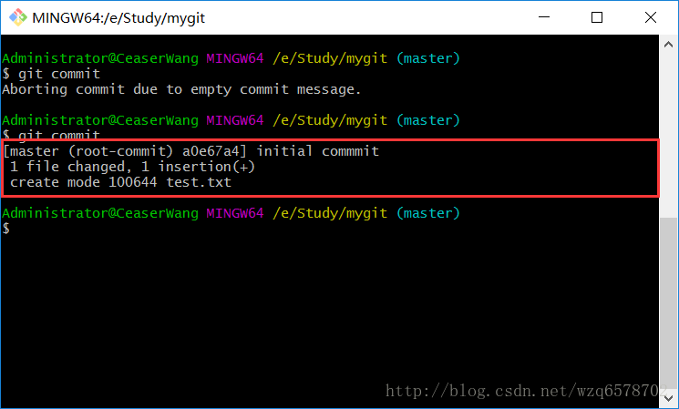
create mode 100644 test.txt 即创建模式。此时再去查看git status：
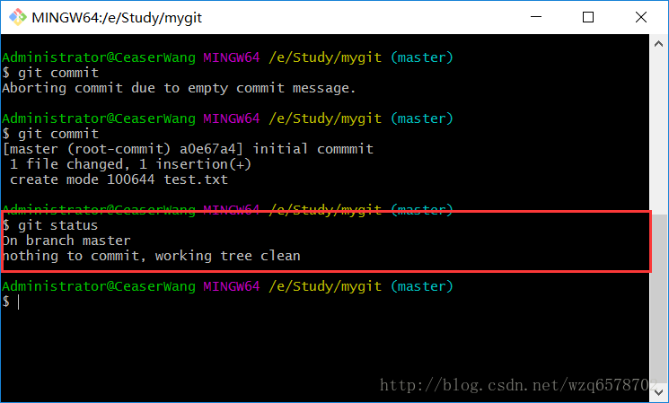
意思是没有任何可以提交的文件。
查看提交历史：
git log
查看当前版本库的提交历史：
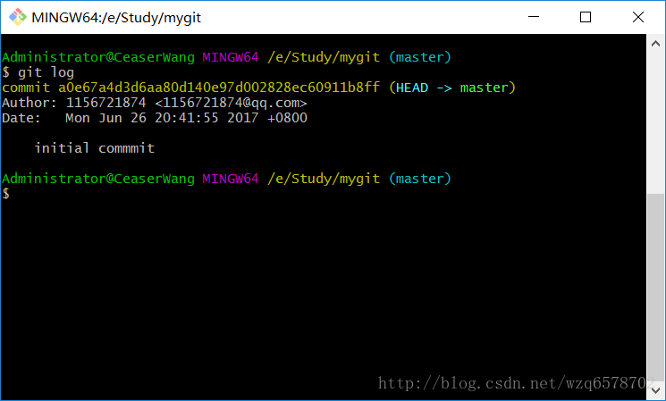
commit a0e67a4d3d6aa80d140e97d002828ec60911b8ff 这个提交id是一个摘要值，通过sha1计算出来的，sha1和MD5很相似，都是不可逆的。
author是提交人，date是提交的时间。
接下来我们要修改下名字和邮箱，对于user.email和user.name有三种方式可以设置：
- /etc/gitconfig （针对于整个OS,不常用） git config –system
- ~/.gitconfig(很常用) git config –global
- 针对于特定项目的 位于当前项目的 .git/config文件中。 git config –local
我们针对于第二种和第三种情况进行说明：
git config –global
首先进入.git目录查看 config文件内容：
git config命令一些参数：
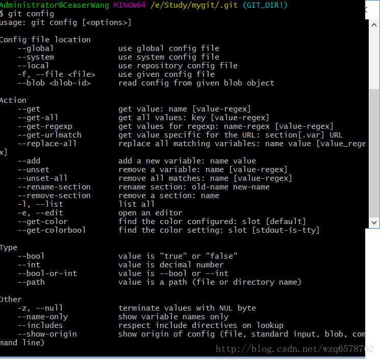
config文件内容：
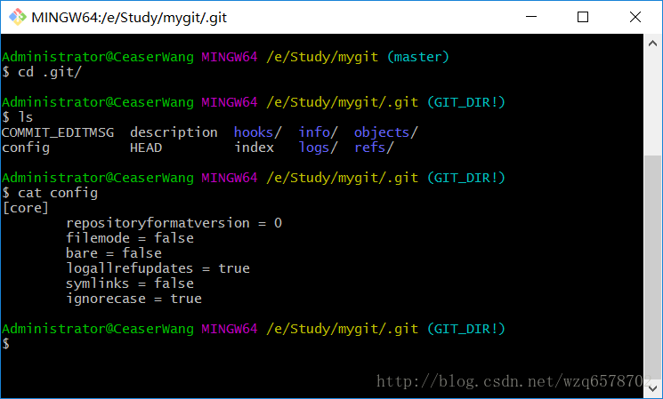
紧接着：
git config –local user.name ‘CeaserWang’
git config –local user.email ‘xxx@xxx.com’
进行配置用户和邮箱，此时我们可以展示一下:
git config user.name
git config user.email
同时再次查看config文件会发现user.name和user.email都存在了。
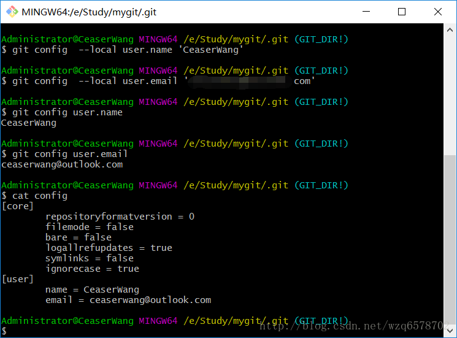
或者 git config –list查看所有配置参数
git config –local user.name ‘CeaserWang’
git config –local user.email ‘xxx@xxx.com’ 这些命令也可以用来修改，再说一下删除：
git config –local –unset user.name
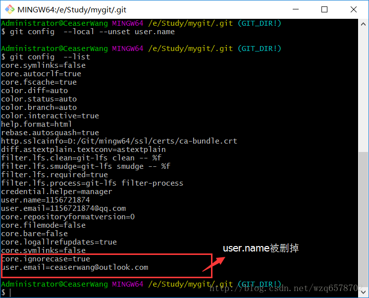
接下我们回到mygit根目录，修改下test.txt文件，然后git staus 查看状态：
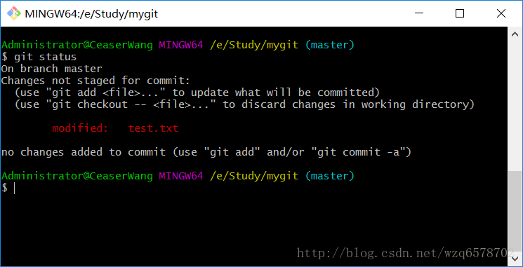
这时提示信息又发生一些变化。
modified: test.txt意思是已经修改了。
(use “git checkout –…” to discard changes in working directory 意识是 使用git checkout – 命令丢弃刚才的修改。
首先我们的文件修改之后加入了一行文字（welcome）然后状态是modified状态，此时我们使用git checkout 命令回退刚才的修改：
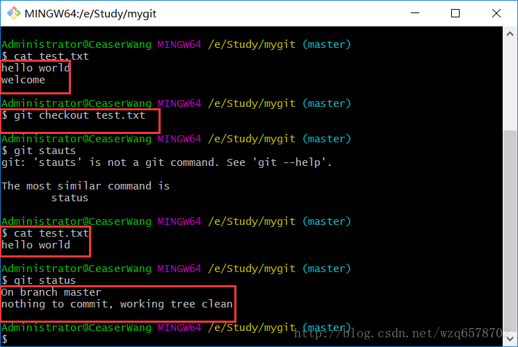
会发现刚下的修改会取消了，状态回到愿原来的状态。这个命令要小心一点，因为文件没有放到版本库里边，真的丢弃了就找不回来了。
另外git commit的提交说明可以直接：git commmit -m ‘提交说明’
提交日志时间是按照倒序的排列：
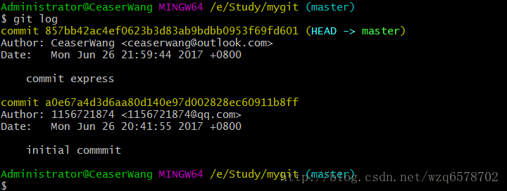